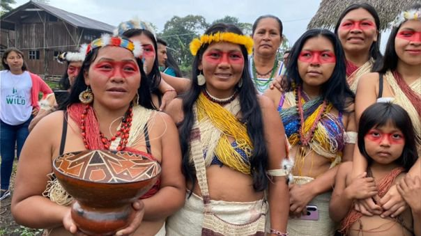

Latinos and discrimination

Overall, four-in-ten
Latinos say they have experienced discrimination in the past year, such as being criticized
for speaking Spanish or being told to go back to their home country. These experiences are more
likely among those who say others see them as Latino, black or another non-white group than among
Latinos who say others see them as white. At the same time, just as many Latinos say someone
in the past year had expressed support for them because they are Latino.
Many Hispanics say others see them as Hispanic

About two-thirds of U.S. Hispanics (68%) say that if people passed them on the street they would
describe them as Hispanic or Latino. Hispanics who are foreign born (79%) and second generation (68%) are more likely
than the third or higher generation (50%) to say this.
Meanwhile, about one-in-five Hispanics
(18%) say people passing them on the street would describe them as white. This share increases as immigrant
connections grow distant. About 10% of Hispanic immigrants say a person would describe them as white, while 16%
of the second generation and 33% of the third or higher generation say the same.
Many Hispanics with lower levels
of education also say those passing them on the street would see them as Hispanic or Latino. About
three-quarters of Hispanics with a high school diploma or less (77%) say this, compared with 56% of
those with some college education or higher. By contrast, about a quarter of Hispanics with some college
education or higher (27%) say people passing them on the street would describe them as white, compared with
12% of those with a high school education or less.